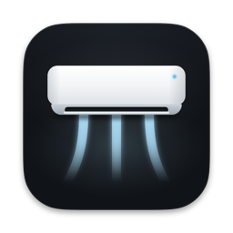

WindFree
Control your Samsung WindFree air conditioner from the Mac menu bar.
Not sure which Mac you have? Open the Apple menu > About This Mac. If it says “Chip”, choose Apple Silicon. If it says “Processor”, choose Intel.

Install in three steps
-
Open the DMG
Double-click the file you downloaded (
WindFree-arm64.dmgorWindFree-x64.dmg) in your Downloads folder. -
Drag it to Applications
In the window that opens, drag WindFree onto the Applications folder. Then open it from there.
-
Allow the first open
The first time, macOS blocks WindFree. Dismiss the warning (do not move the app to the Trash), open System Settings > Privacy & Security, scroll to Security and click Open Anyway next to WindFree. Confirm with your password or Touch ID.
Why the warning? WindFree is not notarized by Apple. Notarization needs a paid developer account, which this project does not have, so the app only carries a local signature and macOS cannot vouch for it. It is the same app whose code is public on GitHub.
Prefer no warnings? Use one line in Terminal
Open Terminal (in Applications > Utilities), paste this line and press Return. It downloads the right version for your Mac, checks it, puts WindFree in Applications and opens it. Nothing asks for your password.
curl -fsSL https://raw.githubusercontent.com/kevinnfsilva/samsung-windfree-menubar-app/main/install.sh | bash
Files downloaded this way do not get the “downloaded from the internet” mark that makes macOS show the warning, so the app opens straight away.
The script is short and readable: read install.sh on GitHub before you run it.
What it does

- Turn the AC on and off and set the temperature from the menu bar icon or the panel.
- Change the mode, fan speed and vane direction. Turn on WindFree and sleep mode.
- See the room temperature and humidity that the AC measures.
- Save favorites: your usual settings, one click away.
- Set a timer, or schedules by time and weekday.
- Follow the energy use and get notified about the filter, an offline AC or an AC left on.
- Light or dark appearance, in Portuguese or English.
- Starts with your Mac, if you want it to.
The panel only shows the options your own unit supports.


What you need
- A Mac with macOS 13 (Ventura) or newer, Apple Silicon or Intel.
- A Samsung account with your air conditioner already set up in the SmartThings app.
- Nothing else: you do not need to install Node.js.
On Windows? There is no installer. The app runs from the source code with Node.js, and the README explains how.